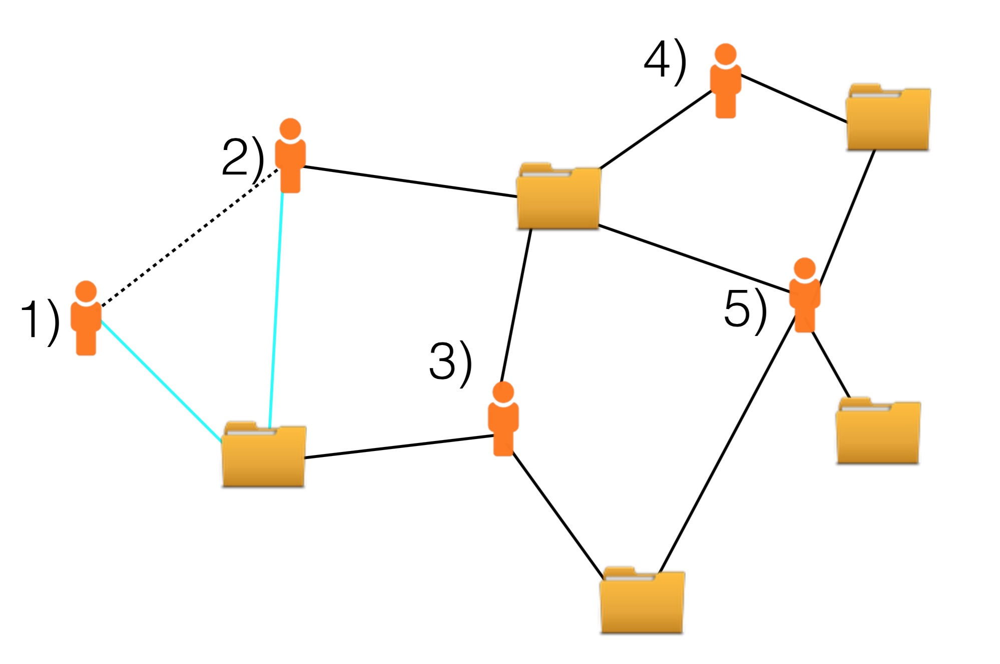
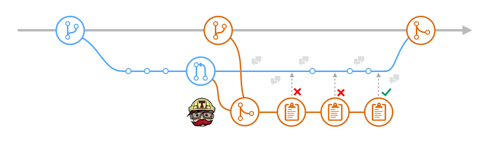
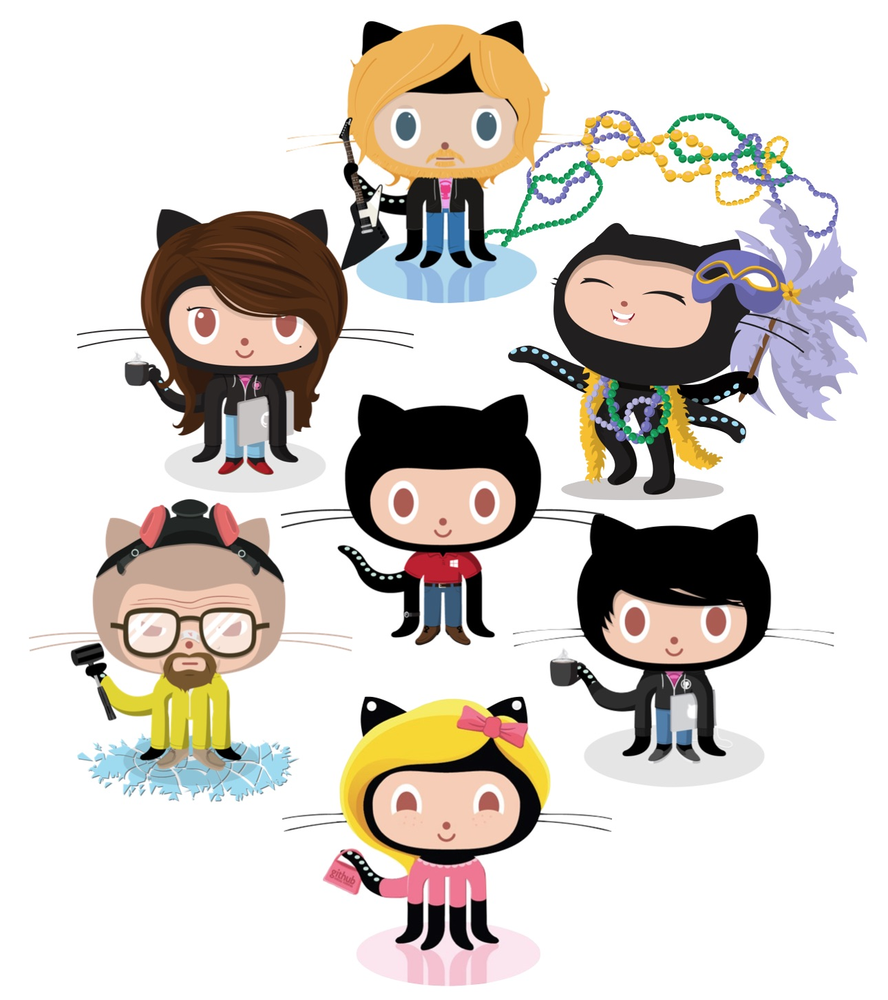

The pull-based model is an innovation made popular by GitHub, to speed up and scale up distributed development: anyone can submit pull request contributions (proposed changes) to any project. Pull requests are reviewed by core developers (aka integrators) and accepted only if deemed of sufficient quality and utility. This low barrier to entry for newcomers, together with GitHub’s scale (30 million projects), means that developers have a great many projects to choose from and that integrators have increasingly higher review loads.

We have already seen in prior work that socializing is very important for advancement in open source software development (see our EMSE'14 paper): one ramps up their communication activity like never before prior to being promoted to core developer status. But how do social connections and experience affect people's migrations between projects, and their technical contributions?
We mined data for 1,200 prolific developers from GitHub, and used statistical modeling to precisely delineate these factors. As expected, we found that having past social connections with project members is a precursor to developers joining a new project. Moreover, it is associated with higher productivity. Our models enable us to estimate precisely how important each factor is (see our FSE'15 paper):
 To cope with high review loads, integrators can and do resort to CI services such as Travis-CI (see our MSR'15 paper). CI attempts to automatically build and deploy the software in a "sandbox", and automatically run a collection of tests when a pull request is received. By automating these steps, a project can hope to gain both productivity (more pull requests accepted) and quality (the accepted pull requests are prescreened by the automation provided by CI). Does CI actually help to speed up the pull request process and to ensure higher quality code?
We mined data from 246 GitHub projects that added the Travis-CI functionality to their development process at some point in their history. Using this data set, we built zero-inflated regression models to compare activity before and after adoption of Travis-CI. We found that:
Due to largely meritocratic hiring, software teams can be quite diverse, e.g., with respect to gender, cultural background, and programming language preference. However, women are still underrepresented in programming (industry reports 16-18% female developers; open source around 10%). On social coding platforms, the situation is even worse: in a GitHub sample, I estimated 9% female developers (see our CHI'15 paper and our MSR'15 paper) and on Stack Overflow only 7% (see our IWC'14 paper). Why are modern social coding platforms so exclusive? Is it related to community design? Is it an intrinsic characteristic of software teams?
 Using data from thousands of projects on GitHub, we analyzed the relationships between team diversity, productivity, and turnover using generalized linear mixed-effects models (see our CHI'15 paper). We found that both gender and tenure diversity are positive and significant predictors of productivity: teams that are more balanced in terms of gender and seniority have higher productivity rates.
Through a large-scale survey (800+ developers), we found that respondents value diversity for their team's creativity and problem solving effectiveness. Despite these many positives, a handful of female respondents reported frustration and disengagement from a project due to gender-related incidents (see our CHASE'15 paper).
We compared activity on Stack Overflow, a gamified Q&A platform where people are rewarded with reputation points and badges, with that on traditional mailing lists. We found that on Stack Overflow women disengage sooner than men, although relative to their tenure they are comparably active. We predict that the achievement-oriented nature of Stack Overflow, cultivated by the many gamification elements in its design, is creating an environment hostile to women, driving them away from participation. (see our IWC'14 paper)
 Bogdan Vasilescu
Bogdan Vasilescu